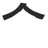
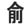

KANJIDAMAGE
Intro
Kanji facts
How to
Tags
Kanji
Radicals
Appendix
Onyomi
Ill pairs
Dupes
Articles
Long short vowlels
Synonyms
Forum
|
← Previous
Number 924
Next →

peaked roof
(top radical)
PK
Used In
金
茶
傘
全
企
食
幹
舎
余
倉
介
合
令
会
谷

今
 KANJIDAMAGE
KANJIDAMAGE
 Number
924
Number
924